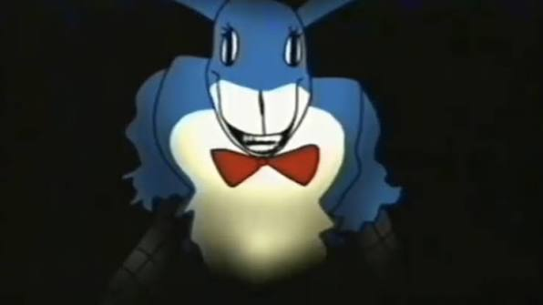

O Casamento de Rosemary
Por: Arquivista da Bunny Smiles
▼ Clique para expandir/fechar
Rosemary Walten era a dedicada esposa de Jack Walten e mãe de Sophie, Edd e Molly. A foto registra o dia de seu casamento, um momento de extrema felicidade antes do colapso da família. Após o desaparecimento misterioso de seu marido em 1974, Rosemary buscou respostas incansavelmente até também desaparecer na instalação K-9.

Felix Kranken: O Co-Fundador
Por: Arquivista da Bunny Smiles
▼ Clique para expandir/fechar
Co-fundador da Bunny Smiles Company e melhor amigo de Jack Walten. Felix gerenciava o lado financeiro da empresa. Seus sérios problemas pessoais e vícios culminaram em um acidente devastador na noite de maio de 1974, mudando para sempre os rumos da Bunny Smiles.

Sophie Walten e as Memórias
Por: Arquivista da Bunny Smiles
▼ Clique para expandir/fechar
A única filha sobrevivente de Jack e Rosemary Walten. Sofrendo de amnésia traumática devido aos eventos de sua infância, Sophie começa a recuperar suas memórias perdidas ao jogar um protótipo de arcade misterioso chamado "Bunnyfarm".

O Animatrônico Bon
Por: Arquivista da Bunny Smiles
▼ Clique para expandir/fechar
Bon é o principal mascote da marca. Apesar da imagem amigável nos comerciais da época, registros internos indicam anomalias graves no seu comportamento durante a noite no depósito K-9.